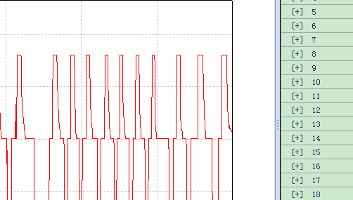
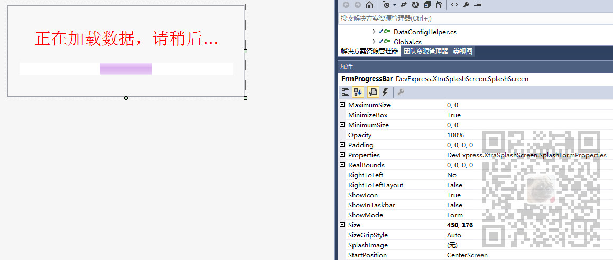
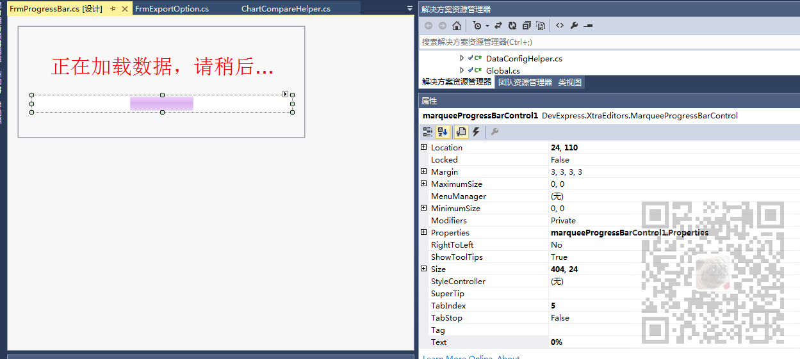

原文出处:本文由博客园博主霸道流氓提供。
原文连接:https://www.cnblogs.com/badaoliumangqizhi/p/11882943.html
原文连接:https://www.cnblogs.com/badaoliumangqizhi/p/11882943.html
场景
在Winform中实现弹窗式进度条

就是新建一个窗体，然后在窗体中加入进度条控件，然后在触发进度条的事件中将加载进度报告给
进度条控件。
注：
博客主页：
https://blog.csdn.net/badao_liumang_qizhi
关注公众号
霸道的程序猿
获取编程相关电子书、教程推送与免费下载。
实现
设计进度条窗体
新建窗体FrmProgressBar，打开设计页面，打开DevExpress的工具箱。
拖拽一个SplashScreen控件

然后再拖拽一个label和MarqueeProgressBarControl控件

然后打开其代码页面，编辑其代码为
public partial class FrmProgressBar : SplashScreen
{
#region 单例实现
private static string _lockFlag = "FrmProgressBarLock";
private static FrmProgressBar _instance = null;
/// <summary>
/// 进度条窗口实例
/// </summary>
public static FrmProgressBar Instance
{
get
{
lock(_lockFlag)
{
if (_instance == null)
{
_instance = new FrmProgressBar(true);
}
else if (_instance.IsDisposed)
{
_instance = null;
_instance = new FrmProgressBar(true);
}
return _instance;
}
}
}
#endregion
#region 字段定义
private bool _isShowTitle = false;
#endregion
#region 构造方法
private FrmProgressBar()
{
InitializeComponent();
}
private FrmProgressBar(bool isShowTitle)
{
InitializeComponent();
this._isShowTitle = isShowTitle;
this.marqueeProgressBarControl1.Properties.ShowTitle = this._isShowTitle;
}
#endregion
#region 属性定义
/// <summary>
/// 是否显示标题
/// </summary>
public bool IsShowTitle
{
get
{
return this._isShowTitle;
}
set
{
this._isShowTitle = value;
this.marqueeProgressBarControl1.Properties.ShowTitle = this._isShowTitle;
}
}
/// <summary>
/// 提示文本
/// </summary>
public string NotifyText
{
get
{
return this.labelControl2.Text;
}
set
{
this.labelControl2.Text = value;
}
}
/// <summary>
/// 进度值
/// </summary>
public int ProgressValue
{
get
{
return (int)this.marqueeProgressBarControl1.EditValue;
}
set
{
this.marqueeProgressBarControl1.Text = String.Format("{0}%", value);
}
}
#endregion
#region Overrides
public override void ProcessCommand(Enum cmd, object arg)
{
base.ProcessCommand(cmd, arg);
}
#endregion
public enum SplashScreenCommand
{
}
}
调用进度条窗体
需要新开一个线程去执行进度条所代表的任务，在触发进度条的事件中
BackgroundWorker bgWorker = new BackgroundWorker();并且设置其是否报告进度属性为true
bgWorker.WorkerReportsProgress = true;然后绑定具体的进度条所代表的任务
bgWorker.DoWork -= backgroundWorker1_DoWork;
bgWorker.DoWork += backgroundWorker1_DoWork;在此绑定的方法中就会执行具体的任务
然后设置任务进度改变的事件绑定
bgWorker.ProgressChanged -= bgWorker_ProgressChanged;
bgWorker.ProgressChanged += bgWorker_ProgressChanged;在此方法中进行进度条进度与任务执行进度的绑定
private void bgWorker_ProgressChanged(object sender, ProgressChangedEventArgs e)
{
if (e.ProgressPercentage >= 0 && e.ProgressPercentage <= 100)
{
Dialog.FrmProgressBar.Instance.ProgressValue = e.ProgressPercentage;
}
}然后设置任务执行完之后关闭进度条窗口
bgWorker.RunWorkerCompleted -= bgWorker_RunWorkerCompleted;
bgWorker.RunWorkerCompleted += bgWorker_RunWorkerCompleted;在执行完的方法中
private void bgWorker_RunWorkerCompleted(object sender, RunWorkerCompletedEventArgs e)
{
Dialog.FrmProgressBar.Instance.Dispose(); //关闭进度对话框
}然后开始执行后台操作
bgWorker.RunWorkerAsync();然后最后让进度条窗体显示
Dialog.FrmProgressBar.Instance.ShowDialog();需要注意的是：
在DoWork 中绑定的具体的执行的任务中一定是佷费时间的任务，如果就是简单的
几个for循环，那么会看不到效果，因为这两个线程没有时间差，所以会同时显示与关闭。
所以在具体执行的后台任务中要执行有时间差的任务，比如读取大数据量文件。
并且在执行此任务时要根据执行的任务进度去进行报告。
在DoWork绑定的方法中
BackgroundWorker bgWorker = sender as BackgroundWorker;
。。。
bgWorker.ReportProgress(10); //10%
。。。
bgWorker.ReportProgress(65);
。。。
bgWorker.ReportProgress(100);完整示例代码
//创建新的后台线程
BackgroundWorker bgWorker = new BackgroundWorker();
//设置线程是否报告进度为true
bgWorker.WorkerReportsProgress = true;
//绑定具体的后台任务的方法，在此方法中会报告进度
bgWorker.DoWork -= backgroundWorker1_DoWork;
bgWorker.DoWork += backgroundWorker1_DoWork;
//当进度改变时事件绑定，将绑定的进度作为进度条的进度
bgWorker.ProgressChanged -= bgWorker_ProgressChanged;
bgWorker.ProgressChanged += bgWorker_ProgressChanged;
//后台线程执行完事件绑定，会关闭进度条窗口
bgWorker.RunWorkerCompleted -= bgWorker_RunWorkerCompleted;
bgWorker.RunWorkerCompleted += bgWorker_RunWorkerCompleted;
//开始执行后台操作
bgWorker.RunWorkerAsync();
//显示进度条窗口
Dialog.FrmProgressBar.Instance.ShowDialog();执行后台任务的方法
private void backgroundWorker1_DoWork(object sender, DoWorkEventArgs e)
{
BackgroundWorker bgWorker = sender as BackgroundWorker;
List<Cycle> cycles = null;
List<Step> steps = null;
List<Record> mainRecords = null;
bgWorker.ReportProgress(10); //10%
#region 加载循环数据
string cycleDataFile = String.Format("{0}{1}", Global.Instance.CurrDataFile, Global.CYCLE_EXT);
if (System.IO.File.Exists(cycleDataFile))
{
using (System.IO.Stream fs = new System.IO.FileStream(cycleDataFile, System.IO.FileMode.Open, System.IO.FileAccess.Read))
{
cycles = ProtoBuf.Serializer.Deserialize<List<Cycle>>(fs);
}
}
bgWorker.ReportProgress(40);
#endregion
#region 加载工步数据
string stepDataFile = String.Format("{0}{1}", Global.Instance.CurrDataFile, Global.STEP_EXT);
if (System.IO.File.Exists(stepDataFile))
{
using (System.IO.Stream fs = new System.IO.FileStream(stepDataFile, System.IO.FileMode.Open, System.IO.FileAccess.Read))
{
steps = ProtoBuf.Serializer.Deserialize<List<Step>>(fs);
}
}
bgWorker.ReportProgress(70);
#endregion
#region 加载主通道数据
string mainRecordDataFile = String.Format("{0}{1}", Global.Instance.CurrDataFile, Global.MAIN_EXT);
if (System.IO.File.Exists(mainRecordDataFile))
{
using (System.IO.Stream fs = new System.IO.FileStream(mainRecordDataFile, System.IO.FileMode.Open, System.IO.FileAccess.Read))
{
mainRecords = ProtoBuf.Serializer.Deserialize<List<Record>>(fs);
}
}
#endregion
bgWorker.ReportProgress(100);
}
后台任务进度改变事件
private void bgWorker_ProgressChanged(object sender, ProgressChangedEventArgs e)
{
if (e.ProgressPercentage >= 0 && e.ProgressPercentage <= 100)
{
Dialog.FrmProgressBar.Instance.ProgressValue = e.ProgressPercentage;
}
}后台任务执行完毕事件
private void bgWorker_RunWorkerCompleted(object sender, RunWorkerCompletedEventArgs e)
{
Dialog.FrmProgressBar.Instance.Dispose(); //关闭进度对话框
}